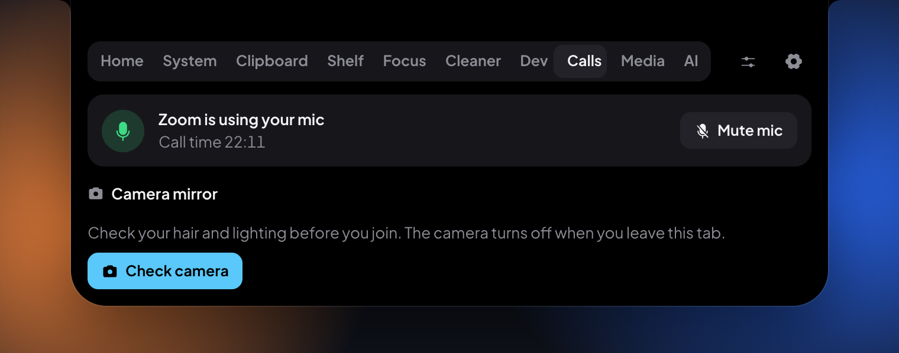

Small until it matters
It sits at the top of your screen, about the size of the notch. Hover, click, or press ⌥⌘G (Ctrl+Alt+G on Windows and Linux) to open it. It opens by itself only when something is worth seeing.

Whatever's playing, one hover away
Spotify, Apple Music, YouTube, and other players. See the song or video, play and pause, skip, or drag the timeline. The panel takes its color from the artwork.
While music plays, the small island shows the cover and a little level meter.

Copy a time, get a reminder
Copy "meeting moved to 3 pm" or "rapat Jumat jam 14.00" and the island offers to remind you. One click. Any copied text can get a reminder: in an hour, tonight, tomorrow morning, or any time.
Understands English and Indonesian, on your computer, without the internet.
A clipboard that remembers, and understands
Text, links, code, colors, and screenshots, searchable and pinnable. Press ⌥⌘V (Ctrl+Alt+V) to bring it up. It decodes JWTs, timestamps, and JSON, and can copy a link without its trackers.
API keys and private keys are never saved, and they leave your clipboard after 60 seconds.

For developers
See every local server by port and folder, open it, or stop it. Get told when a build or test of 10 seconds or more finishes, with how long it took.

For calls
See which app has your mic and how long the call has run. Mute the mic for every app at once on a Mac, and check your camera before you join.
Free on every computer you use
One app, three systems. Pick yours; every download is the same free app.
Windows
Windows 10 version 1809 or newer, 64-bit. Installs without an admin password.
4 GB of memory is enough; 8 GB is comfortable. It uses about 1% of the CPU while you work. The first time you open it, macOS or Windows may warn you, because the app isn't signed yet: the install guide shows the one-time steps.
Free means free
There is no paid version. Every feature on this page is in the download, and it stays that way. No trial that runs out, no feature behind a login.
It's open source under the GPL-3.0, so anyone can read the code, and any changed version has to stay open too.
Made by Adam Faturahman. If it saves you time, you can buy him a coffee. It's optional, and the app is the same either way.
Your data stays with you
No account, no analytics, no tracking. The app sends nothing about you anywhere.
Your clipboard stays on your computer, and API keys and private keys are never written to disk.
It never listens to your mic. It only asks the system whether an app is using it.
The details are in the Privacy Policy.
Questions
Is it really 100% free?
Yes. There's no paid version, no trial, no ads, and no account. The code is open source under the GPL-3.0. A coffee tip is welcome but changes nothing in the app.
Do I need a MacBook with a notch?
No. With a notch it blends into the camera housing. On other Macs, and on Windows and Linux, it floats as a small pill at the top of the screen.
How is it different from NotchNook or Boring Notch?
It covers similar ground, like now playing and a file shelf, and adds clipboard history, reminders from what you copy, a system monitor, developer tools, and call tools. It's free, and it runs on Windows and Linux too.
Will it slow down my computer or drain the battery?
It's built to stay out of the way: about 1% of the CPU while you work, nothing animates while it's still, and features you switch off stop running.
Why does my computer warn me when I first open it?
The app isn't notarized by Apple or code-signed for Windows yet, which costs money for a free project made by one person. The install guide shows how to open it the first time.
Put your notch to work
Free for Mac, Windows, and Linux. It takes a minute to install.
Download for free